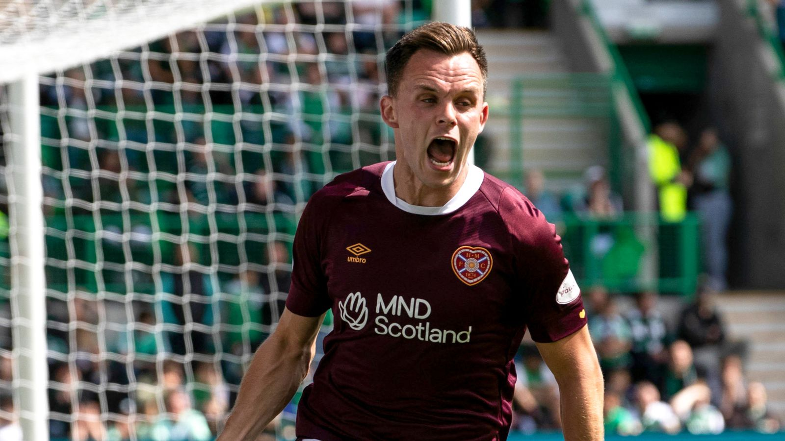
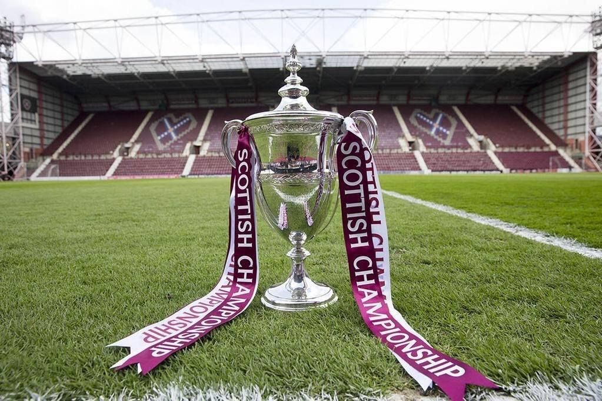

Here is me, Antoine Martelli .

Biography
Born in Marseille,I'm 23, Headcoach of Heart of Middlothian, a scottish club. I had diplomas to put the club at the top of european football and optimize the formation center to favorize scottish talents
AboutHeart of Middlothian
Heart of Midlothian Football Club, commonly known as Hearts, is a professional football club in Edinburgh, Scotland. The team competes in the Scottish Professional Football League. Hearts, the oldest and most successful football club in the Scottish capital, was formed in 1874. Hearts have played home matches at Tynecastle Park since 1886.
Get more infosFavourite Player
Lawrence Shankland is a Scottish professional footballer who plays as a striker for Scottish Premiership club Heart of Midlothian and the Scotland national team.
Trophies

Heart of Midlothian, commonly known as Hearts, have won four Scottish League titles, eight Scottish Cups, and four Scottish League Cups in their history.
Get more infosJerseys


This iconic design has remained unchanged for many years, reflecting the traditional colors of the city of Edinburgh, maroon and white, where the club is based. The choice of colors is also linked to the history of the club. The Heart of Midlothian are named after an ancient establishment in the city of Edinburgh.
Get more infos